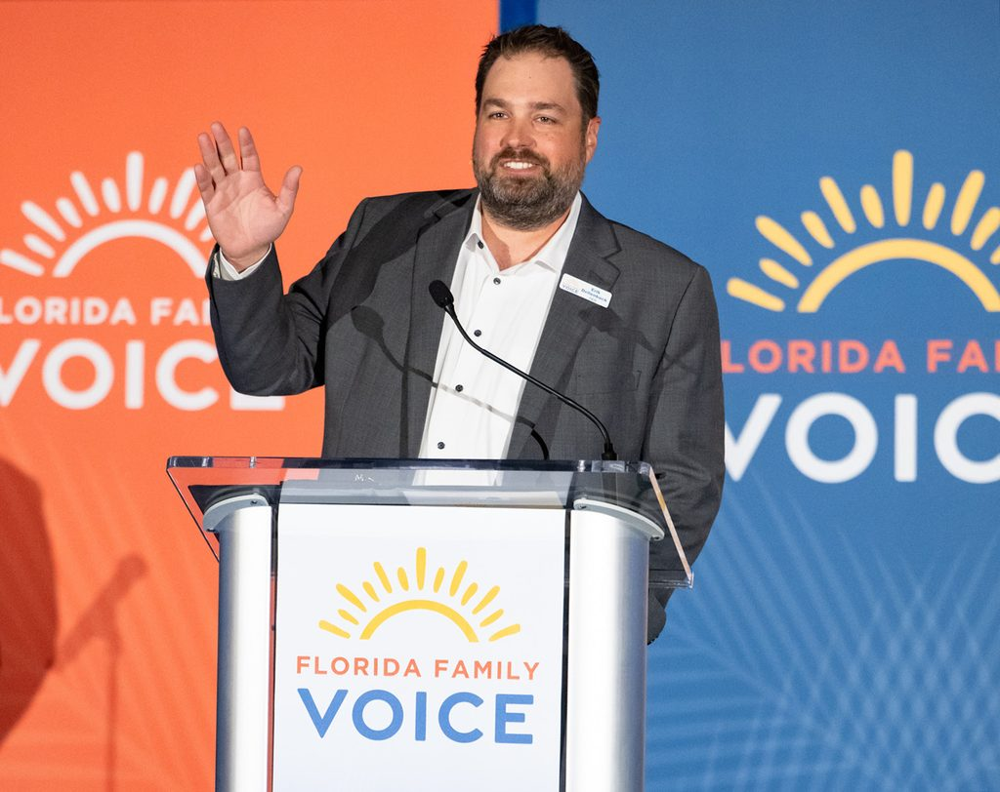

Invite Erik to speak
I’ve had a rather unique career with my last 25 years being spent in the business of football or next to Tim Tebow, Chris Tomlin and Governor Ron DeSantis, respectively. I’ve learned quite a bit in those roles and would love to share those things with your group or gathering.
Erik has spoken literally hundreds of times to groups throughout Florida, around the country and across the globe. He speaks to churches, ministries, boards and conferences about what being in those rooms has taught him. From speeches, sermons and podcasts, he has spoken on numerous topics, tailoring each message for the respective group and their desired outcome.
Some speaking topics
Being unqualified and still unstoppable
God is still in the ark building business
The metal bunny
Money and the human heart
What to do with things you’ve seen that you can’t unsee
The lad still ate
A story of how sacrificing for the Lord isn’t just giving something up.
David’s anointing
The cross section of faith and politics
A Christian’s role in voting and government
Speaking requests and press: send a note through the contact form. Full bio and headshot: About.